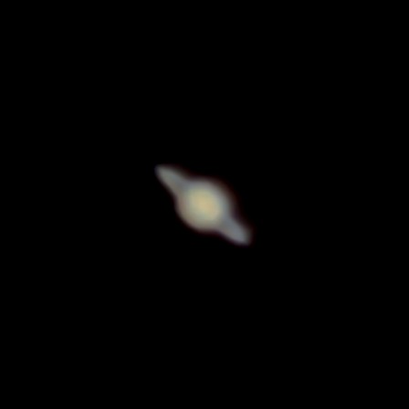
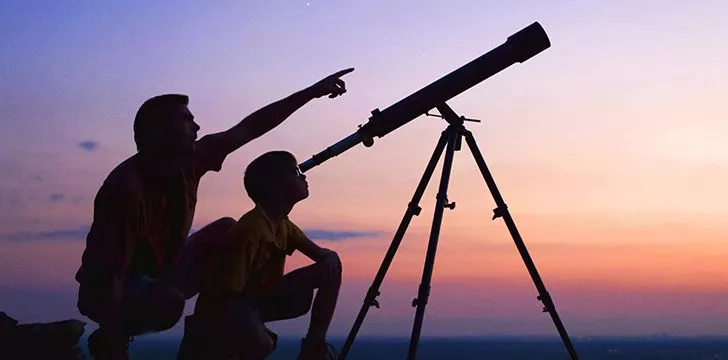

Celestial bodies in our system
Mercury: The Swift Messenger
Closest to the sun, Mercury is a rocky world with extreme temperature variations, ranging from scorching hot to frigid cold. Its barren surface is scarred by impact craters and volcanic plains, offering a glimpse into the tumultuous history of our solar system's formation.Venus: The Shrouded Sister
Wrapped in thick clouds of sulfuric acid, Venus is a planet of extreme atmospheric pressure and runaway greenhouse effect. Its surface, hidden beneath a veil of clouds, is a desolate landscape of volcanic plains and towering mountains, reminiscent of a dystopian world.
Earth: Our Pale Blue Dot
The third planet from the sun, Earth is a vibrant oasis of life in the vastness of space. Its diverse landscapes, from lush forests to barren deserts, teem with biodiversity and support a thriving ecosystem of flora and fauna. Earth's unique combination of atmosphere, water, and geological activity make it a haven for life as we know it.
Mars: The Red Planet
Mars, often called the "Red Planet," is a cold and desert-like world with a thin atmosphere. Its surface bears evidence of ancient riverbeds, dried-up lakes, and polar ice caps, hinting at a watery past and raising tantalizing questions about the possibility of past or present life on Mars.
Jupiter: The Giant King
The largest planet in our solar system, Jupiter is a gas giant with swirling bands of clouds and a tumultuous atmosphere. Its iconic Great Red Spot, a massive storm system larger than Earth, has fascinated astronomers for centuries, offering insights into the dynamics of planetary weather systems.
Saturn: The Ringed Jewel
Saturn, renowned for its stunning ring system, is a gas giant with a mesmerizing array of moons and icy particles encircling its equator. Its rings, composed of countless icy fragments, create a celestial spectacle that has captivated observers throughout history.
Uranus and Neptune: The Ice Giants
Uranus and Neptune, the outermost planets in our solar system, are icy worlds shrouded in mystery. Their atmospheres are dominated by hydrogen, helium, and methane, giving them a blue-green hue. Despite their remote locations, these distant giants hold valuable clues to the formation and evolution of our solar system.
When can you see them?
Mercury and Venus, the innermost planets, are often best observed during twilight hours, shortly after sunset or before sunrise. Look towards the western horizon after sunset to catch Mercury, or towards the eastern horizon before sunrise for Venus. Their brightness makes them relatively easy to spot, even in urban areas with light pollution.
Mars and Jupiter are visible to the naked eye for much of the year, appearing as bright points of light in the night sky. Mars, with its reddish hue, is most prominent during its opposition, when it is closest to Earth. Jupiter, the largest planet, shines brightly and is often accompanied by its moons visible through binoculars or a small telescope.
Saturn, with its distinctive ring system, is a stunning sight in the night sky. Look for Saturn in the late evening or early morning hours, rising in the southeast and setting in the southwest. A telescope will reveal the planet's rings and some of its largest moons, adding to the spectacle.
Uranus and Neptune, the outermost planets, require a telescope to observe due to their faintness. They can be found using star charts or astronomy apps, typically appearing as small, pale-blue disks. Look for them in the constellations they are currently situated in, and be prepared for a challenging but rewarding viewing experience.